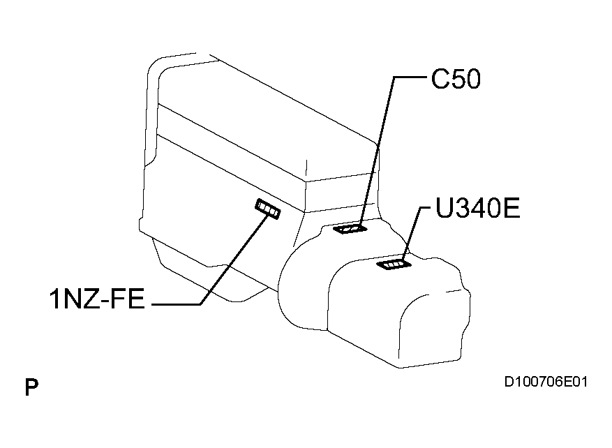

Vehicle Identification And Serial Numbers
- VEHICLE IDENTIFICATION NUMBER
- The vehicle identification number is stamped on the vehicle identification number plate and certification label, as shown in the illustrations.
- Vehicle Identification Number Plate
- Certification Label
 Courtesy of © TOYOTA, LICENSE AGREEMENT TMS1002
Courtesy of © TOYOTA, LICENSE AGREEMENT TMS1002
 Courtesy of © TOYOTA, LICENSE AGREEMENT TMS1002
Courtesy of © TOYOTA, LICENSE AGREEMENT TMS1002
- ENGINE SERIAL NUMBER AND TRANSAXLE SERIAL NUMBER
- The engine serial number is stamped on the cylinder block of the engine and the transaxle serial number is stamped on the housing as shown in the illustration.
- Engine Serial Number
- Transaxle Serial Number

Courtesy of © TOYOTA, LICENSE AGREEMENT TMS1002